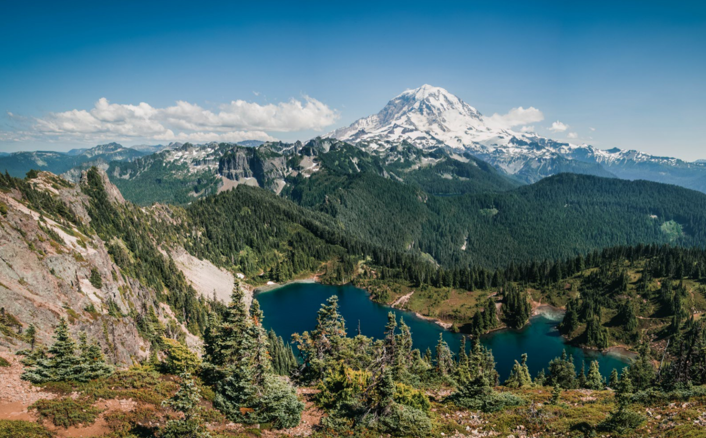

Enjoy All of Our New Spring Activites!
Spring has come, and so has many new seasonal activities to explore the Pacific Northwest.
Wether you want to see the great Washington waters and wilderness, or bustling downtown Seattle,
we have you covered. Many different experiences for all types of people are available from many
different price ranges, but no matter what, you will be amazed at the beauty of this area.
Explore the Outdoors

From expansive mountain ranges, lush forests, and vast waters, Washington state
has so much to offer. This area is one of the most beautiful in the country, and
is fantastic for outdoor experiences. Pacific Northwest Activities offers multiple
different outdoor options for all types of people, some for those wanting calm
relaxation, and some for those who want daring adventure. No matter what, your
time will be beautiful and scenic in this great area.
Click here to learn more!
Explore Seattle

Seattle is a gorgeous city and the biggest in the Pacific Northwest, it has
a great skyline and great activities for tourists and natives to enjoy. It is
situated between the Pacific Ocean, Cascade Mountains, and Lake Washington,
making it a perfect spot to relax and enjoy the view. We offer multiple different
activities meant to let you explore the city, and also wind down and relax.
Click here to learn more!